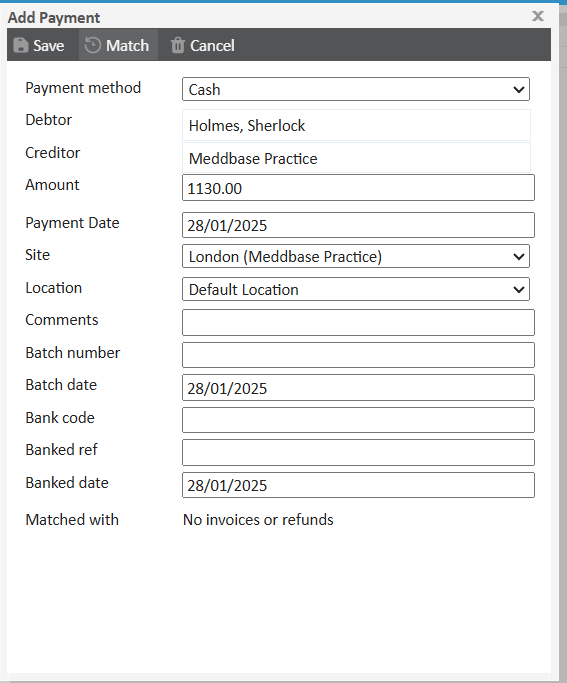
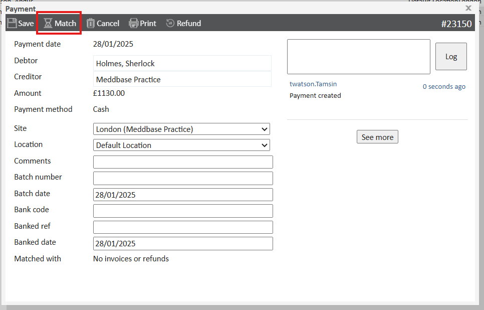
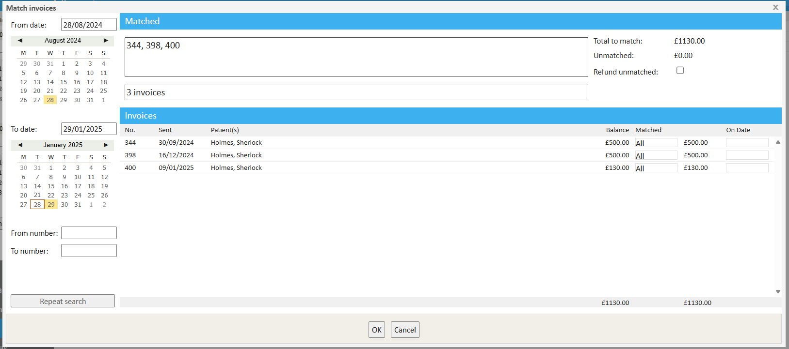
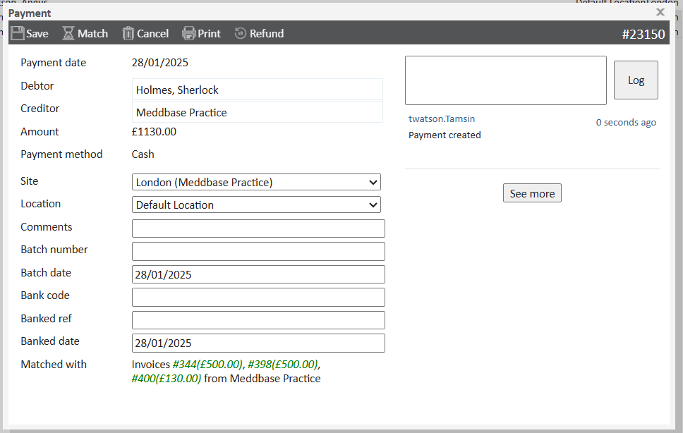

Payments made by clients or patients may often need to be applied to multiple outstanding invoices. This process ensures accurate record-keeping and allows both parties to keep track of which invoices have been settled. Meddbase allows users to efficiently allocate a single payment to multiple invoices through a streamlined matching process.
This article explains how to use Meddbase to allocate one payment across multiple invoices.
All payments can be viewed under the 'Payments' tab on the Accounts page. In the following example, a payment of £1130 is used to pay off three invoices totalling £1130.
To record a payment, click Actions in the top left corner then Add Payment. Select the account the payment is coming from and complete the payment window, setting the payment method, amount and further details. Once done, click Save.

Once the payment has been saved, a new dialog box will appear. Click Match on the top toolbar.

Click Match will open the Payment Match window, in which you will search for sent invoices to match the payment against.
In this window:

You will be taken back to the payment receipt window, where you can see what invoices this payment has been matched to, and click save to confirm.
